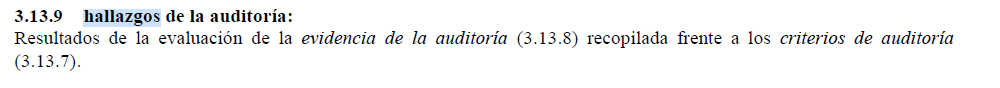
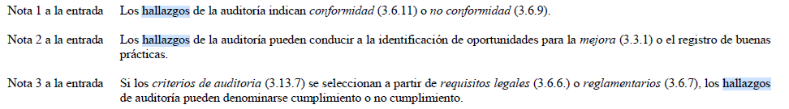
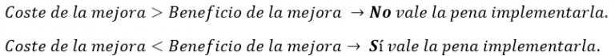
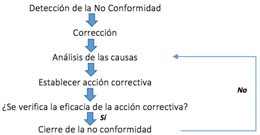

Qué son los hallazgos de auditoría
Estoy seguro que en muchísimas ocasiones has leído conceptos relacionados con la calidad que todo el mundo
utiliza en su vocabulario pero que no terminan de estar claros para ti, como por ejemplo: trazabilidad metrológica,
validación, liberación, hallazgos de auditoria, etc.
O al menos eso me pasaba a mí constantemente cuando empecé a capacitarme como consultor para realizar consultoría iso 9001.
La aplicación de ISO-27001 significa una diferenciación respecto al resto, que mejora la competitividad
y la imagen de una organización.
Muchos de estos conceptos los he definido en un post en el que he preparado un listado con todo este vocabulario iso 9001.
Pero en este artículo quiero centrarme en el término de hallazgos de auditoria para dejarte claro cuál es el concepto,
cómo clasificar los hallazgos de auditoria y ofrecerte muchos ejemplos de hallazgos de auditoria.
Hallazgos de auditoria
Según la norma ISO 9000:2015 Sistemas de gestión de la calidad. Fundamentos y vocabulario el concepto de “hallazgos de auditoria” es el siguiente: «Resultados de la evaluación de la evidencia de la auditoría recopilada frente a los criterios de auditoria».
 Sinceramente creo que esta definición es tan técnica y a su vez introduce otros conceptos que te deja aún con más dudas.
Pero por suerte la norma introduce tres notas que sí aclaran lo que es un hallazgo de auditoria
• Nota 1: Los hallazgos de la auditoria indican conformidad o no conformidad
• Nota 2: Los hallazgos de la auditoria pueden conducir a la identificación de oportunidades para la mejora o el registro de buenas prácticas.
• Nota 3: Si los criterios de auditoria se seleccionan a partir de requisitos legales o reglamentarios, los hallazgos de auditoria pueden denominarse cumplimiento o no cumplimiento.

Por lo tanto, un hallazgo de auditoria es cualquier evento, registro, documento, declaración… en definitiva cualquier cosa que aparece durante la auditoría y que servirá para evaluar si se cumple o no se cumple lo que se está auditando.
Por ejemplo:
Un registro es un hallazgo de auditoría. Un procedimiento es un hallazgo de auditoría. Una conversación del auditor con un trabajador para evaluar cierto proceso de la empresa es un hallazgo de auditoría. Existe cierta confusión con este concepto entre los profesionales que nos dedicamos a la consultoría en la cual se cree que un hallazgo de auditoría es algo que aparece en la auditoría pero que aún no se ha valorado como conforme o no conforme.
Como pudiste leer en la definición de la norma ISO 9000:2015 un hallazgo de auditoría es ya una evidencia evaluada como conformidad o no conformidad (Nota 1).
Cómo se clasifican los hallazgos de auditoria
Los hallazgos de auditoría están clasificados como: conformidad y no conformidad.La no conformidad está claro lo que es y lo que implica. Pero una conformidad puede tener matices que se clasifican en:
Una observación es un hallazgo en el cual sí existe un cumplimiento pero que en el futuro puede convertirse en un incumplimiento debido a cómo se está desarrollando una actividad, tarea o proceso concreto. En el siguiente apartado te pondré ejemplos de este tipo.
Una oportunidad de mejora es un hallazgo en el cual sí existe un cumplimiento, pero a pesar de ello se determina, bajo criterios objetivos, que existe un margen de mejora para optimizar más una actividad, tarea o proceso concreto. Si te vas a enfrentar a una auditoría de calidad bajo la norma internacional ISO 9001 tengo que decirte que los hallazgos que el auditor externo clasifique como oportunidad de mejora no debes preocuparte excesivamente por ellos.
Las oportunidades de mejora están planteadas desde un punto de vista objetivo para ayudarte a mejorar pero no tienes obligación de implementar esa mejora si no compartes el criterio de evaluación del auditor o si sabes que el coste que te llevará implementar esa mejora será superior al beneficio que vas a obtener tras implementarla.
Por consiguiente, siempre que te plantees el implementar una oportunidad de mejora como consecuencia de un informe de auditoria que te han entregado pregúntate en términos de coste-beneficio lo siguiente:

En cambio en las observaciones sí que deberías de tener cuidado ya que éstas podrían convertirse en incumplimientos en un futuro. Podrías considerar las observaciones como un riesgo que estás corriendo respecto al cumplimiento de un requisito, una actividad, una tarea o un proceso.
Deberías de abordar estas observaciones para que no se conviertan en una no conformidad, es decir, en un incumplimiento.
Respecto a las no conformidades, quiero comentarte que los pasos que debes llevar a cabo para tratar las mismas es el siguiente:

Ejemplos de hallazgos de auditoria
Sé que con un ejemplo se ve todo mucho más claro, por lo tanto no voy a escatimar en ponerte ejemplos de hallazgos de auditoria, los cuales
se clasifican en cada uno de los conceptos que te he mencionado: no conformidad, observación, oportunidad de mejora.
Para aportarte el máximo valor posible en este apartado voy a presentarte todos los ejemplos basados en casos reales modificando levemente
la descripción de cada uno de ellos para que no se pueda identificar a qué empresa pertenecen y salvaguardar la confidencialidad.
Ejemplos de hallazgos que representan no conformidades:
En contra de lo descrito en la norma de referencia, no puede evidenciarse
dentro del mapa de procesos que se hayan determinado de forma clara las
entradas requeridas y las salidas esperadas de parte de los procesos del
sistema de gestión. (Procesos de competencia, formación e información, etc)
Si bien se ha realizado una adecuada evaluación de riesgos y oportunidades
los aspectos identificados en el análisis del contexto y de los grupos de interés,
no se evidencia que se hayan analizado los riesgos y oportunidades de algunos de
los procesos relacionados con el servicio que presta la organización, con el fin de
integrar e implementar las acciones resultantes en estos procesos del sistema de
gestión de la calidad y evaluar su eficacia. (procesos de gestión x,y,z)
En el control de stock de repuestos se han revisado 3 referencias y en ningún
caso coincide los datos en el soporte informático con las existencias físicas
observadas en el taller No se evidencia la fiabilidad del equipo de medida multímetro.
No se observa la calibración del multímetro.
Durante la revisión de perfiles y fichas de personal en departamento RRHH se ha evidenciado
que no en todos los casos queda registro de la formación recibida por los empleados.
La organización no asegura que los recursos proporcionados para el seguimiento y medición son
apropiados para el tipo específico de actividades de seguimiento y medición realizadas ya que
no se han establecidos criterios de aceptación rechazo (incertidumbres, errores admisibles, etc.)
para alguno de los equipos de inspección.
Se detecta que el plano no está incluido en la ficha de control de planos
Ejemplos de hallazgos que representan observaciones:
En el caso de algunos de los procesos se debería de establecer no solo indicadores de actividad sino también indicadores de eficacia o eficiencia. Aunque se lleva a cabo una correcta evaluación de la formación de los cursos realizados debería especificarse más claramente el resultado por cada uno de los asistentes Pese a que se evidencia el Plan de Calidad de la obra “xyz en el municipio de abc” no es la versión definitiva, se están realizando modificaciones y está pendiente de aprobar. Pese a que se están cumplimentando, existen dos nuevos registros que no se encuentran descritos dentro de los procedimientos de trabajo establecidos por la organización pero exigidos por el organismo público contratante “efg”. De forma puntual se observa que no hay registro de seguimiento de la evaluación intermedia de la formación, tal y como se describe en el procedimiento “hij”. De forma puntual, no se encuentra homologado como proveedor el propietario de nave donde se realizan prácticas para el curso “abc” tal y como se indica en el procedimiento de evaluación de proveedores de la organización. Si bien se logra comprobar la existencia del contrato mercantil entre la empresa xyz y el profesional externo nombre_profesional, no se asegura la vigencia del mismo
Ejemplos de hallazgos que representan oportunidades de mejora:
Se podría reforzar el plan de comunicación para definir de forma más explícita dentro de la organización quien está autorizado para que.
Se recomienda desglosar el plan de acciones de forma explicita para Riesgos y Oportunidades.
La organización podría considerar el emitir diplomas de formación en el curso “xyz” independientemente de la emisión del certificado del curso.
En los documentos de «actas de mantenimiento de los equipos xyz», auditados, no se identifican el número de serie de los equipos inspeccionados. Puede ser conveniente
hacer referencia al listado de inventario de los equipos por contrato.
Puede ser necesario identificar una sistemática para aquellas situaciones de «aceptación de presupuesto» realizadas verbalmente
La organización podría considerar el Ampliar el Excel de “Inspecciones obligatorias de edificios” a otras posibles legislaciones aplicables (legionelosis, etc.)
Sería recomendable potenciar herramientas alternativas a las encuestas para conocer el grado de satisfaccion del cliente.
Todos estos hallazgos de auditoría son una de las patas que conforman la mejora continua en las organizaciones.

lizbeth.guadalupe_tic@tesco.edu.mx